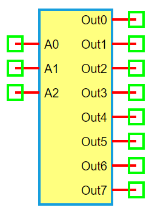

3-to-8 Decoder
Information


A 3-to-8 Decoder is a digital circuit that decodes a 3-bit binary input into one of eight outputs. Only one output is active (logic ‘1’) at a time, determined by the binary value of the inputs. It is commonly used in memory address decoding, control circuits, and data routing.
Truth Table
Ports
A0, A1, A2: Binary address inputs
Out0 to Out7: Eight output lines (only one is high at a time)
Model
The Decoder3to8 model implements a basic 3-bit input to 8-output binary decoder.
Attributes:
A0, A1, A2 (dsignal): Input address lines
Out0–Out7 (dsignal): Eight decoder output lines
Methods:
digital(): Activates one output line based on the binary address inputs
from pyams.lib import dsignal, model
class Decoder3to8(model):
""" 3-to-8 Binary Decoder """
def __init__(self, A0, A1, A2, Out0, Out1, Out2, Out3, Out4, Out5, Out6, Out7):
self.A0 = dsignal(direction='in', port=A0)
self.A1 = dsignal(direction='in', port=A1)
self.A2 = dsignal(direction='in', port=A2)
self.Out0 = dsignal(direction='out', port=Out0)
self.Out1 = dsignal(direction='out', port=Out1)
self.Out2 = dsignal(direction='out', port=Out2)
self.Out3 = dsignal(direction='out', port=Out3)
self.Out4 = dsignal(direction='out', port=Out4)
self.Out5 = dsignal(direction='out', port=Out5)
self.Out6 = dsignal(direction='out', port=Out6)
self.Out7 = dsignal(direction='out', port=Out7)
def digital(self):
""" Perform decoding """
a0 = self.A0
a1 = self.A1
a2 = self.A2
self.Out0 += ~a2 & ~a1 & ~a0
self.Out1 += ~a2 & ~a1 & a0
self.Out2 += ~a2 & a1 & ~a0
self.Out3 += ~a2 & a1 & a0
self.Out4 += a2 & ~a1 & ~a0
self.Out5 += a2 & ~a1 & a0
self.Out6 += a2 & a1 & ~a0
self.Out7 += a2 & a1 & a0
Command syntax
The syntax for defining a 3-to-8 decoder in a PyAMS simulation:
# Import the model
from pyams.models import Decoder3to8
# DEC: instance name
# A0, A1, A2: address inputs; Out0–Out7: output lines
DEC = Decoder3to8(A0, A1, A2, Out0, Out1, Out2, Out3, Out4, Out5, Out6, Out7)